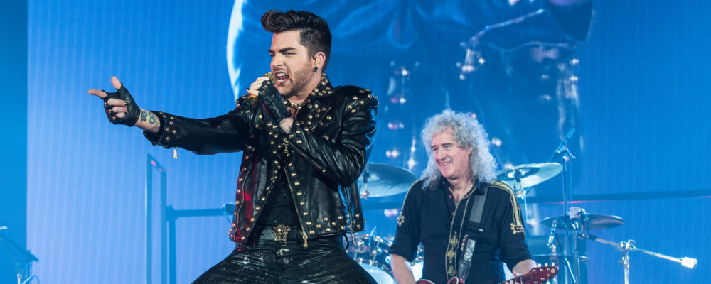

After performing with American Idol finalists Kris Allen and Adam Lambert during the programme's season finale in 2009, the active members of Queen, Brian May and Roger Taylor, began contemplating the future of the band after the group's amicable split with touring collaborator Paul Rodgers. Two years later, at the 2011 MTV Europe Music Awards, Queen was presented that year's Global Icon Award, accepted by May. As part of the broadcast, Queen performed a short set with Lambert, receiving an overwhelmingly welcoming response. Speculation regarding a collaboration with Lambert soon arose, with the three formally announcing a short summer tour of Europe in 2012, including three dates at the Hammersmith Apollo in London, as well as shows in Ukraine, Russia and Poland. As with the partnership with Paul Rodgers, John Deacon chose not to participate.
After a 66-date world tour in 2014–2015 and a well-received European summer tour in 2016, it was announced on 26 January that the group would return to North America for a 25-city tour. The tour includes two nights at the Hollywood Bowl in Los Angeles, as well as shows at the newly constructed T-Mobile Arena in Las Vegas and Barclays Center in Brooklyn. The North American leg is scheduled to end at the Toyota Center in Houston on 5 August 2017. In April 2017, the group announced European dates scheduled for November and December of that year. Two months later, it was reported that the group would perform in New Zealand and Australia in February and March 2018.
In March 2017, percussionist Rufus Tiger Taylor confirmed in an Instagram post that he would not be touring with the band for the first time since the start of the collaboration with Lambert, citing schedule conflicts with his band The Darkness. His place was taken by longtime Queen Extravaganza drummer Tyler Warren.
The Queen + Adam Lambert Tour 2017–2018 is an ongoing worldwide concert tour by British rock band Queen and American singer Adam Lambert. The North American leg began on 23 June 2017, in Glendale, Arizona at the Gila River Arena and continued throughout the continent until its last show at the Toyota Center in Houston. In Continental Europe, the tour began in Prague on 1 November 2017 and ended in Copenhagen on 22 November before recommencing for a UK and Ireland arena tour on 25 November. The UK leg ended with a show at the Arena Birmingham in Birmingham on 16 December 2017. The group will then play concerts in Oceania starting on 17 February 2018 in Auckland, with current plans indicating that the overall tour will end on 6 March with a show at Perth Arena. The tour marks the group's second visits to North America and Oceania, both of which took place in 2014 as part of the Queen + Adam Lambert Tour 2014–2015.